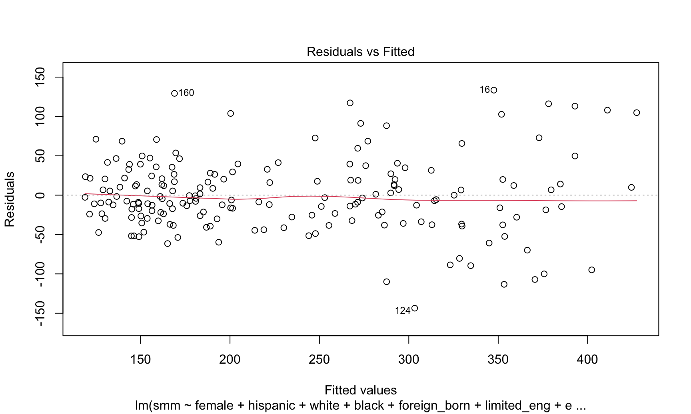
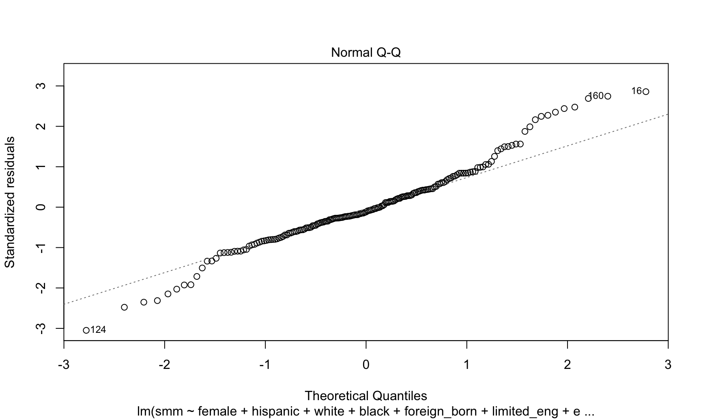
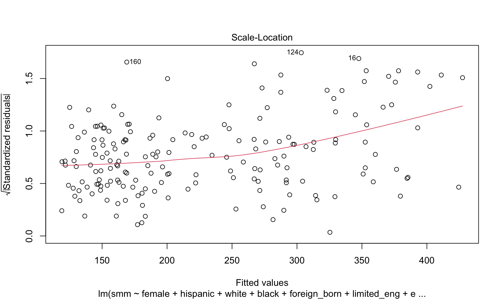
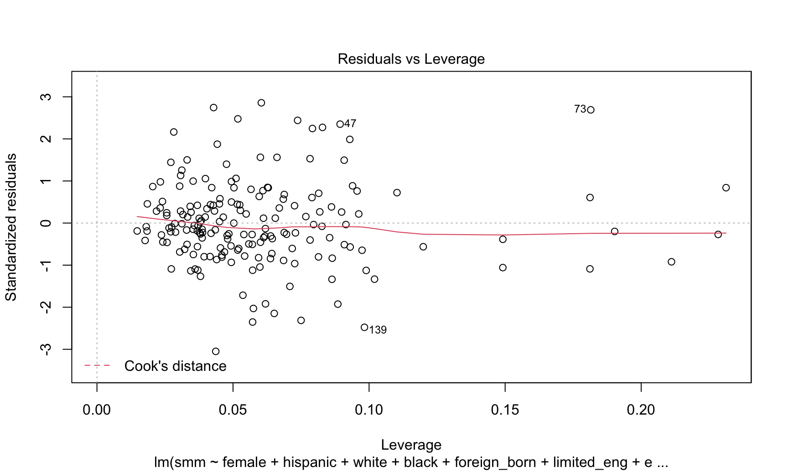

Let’s start by fitting a linear model to the severe maternal morbidity outcome using our stepwise AIC automatic feature selection algorithm. Next, we’ll take a look at the chosen predictors, effect measures, and run regression diagnostics.
#Combined predictors with SMM outcome
predictor_df = read.csv("./data/predictors.csv")
outcome_df = read.csv("./data/outcomes.csv")
smm_df = predictor_df %>%
mutate(smm = outcome_df$smm)
#Fit the full model
full_smm_linear.model <- lm(smm~., data = smm_df)
#Stepwise regression model
step_smm_linear.model <- stepAIC(full_smm_linear.model, direction = "both",
trace = FALSE)
#Display converged model
step_smm_linear.model %>%
broom::tidy() %>%
knitr::kable(digits = 3)| term | estimate | std.error | statistic | p.value |
|---|---|---|---|---|
| (Intercept) | -163.999 | 113.111 | -1.450 | 0.149 |
| female | 2.938 | 1.956 | 1.502 | 0.135 |
| hispanic | 0.982 | 0.407 | 2.411 | 0.017 |
| white | 0.872 | 0.430 | 2.027 | 0.044 |
| black | 2.426 | 0.420 | 5.773 | 0.000 |
| foreign_born | 1.729 | 0.655 | 2.639 | 0.009 |
| limited_eng | -1.723 | 0.794 | -2.171 | 0.031 |
| education | 1.853 | 0.922 | 2.009 | 0.046 |
| unemployment | 3.124 | 1.568 | 1.993 | 0.048 |
| late_no_prenatal_care | 3.906 | 1.931 | 2.022 | 0.045 |
| clinics_and_chc_density | 12.622 | 7.477 | 1.688 | 0.093 |
The variables female, hispanic, white, black, foreign_born, limited_eng, education, unemployment, late_no_prenatal_care, and clinics_and_chc_density were chosen in the final model. The model has an R-squared value of 0.7602807, representing a reasonably good fit.
However, we were concerned about our assumptions for linear regression, so they need to be checked before we can interpret any results.
#Regression diagnostics
plot(step_smm_linear.model)
#Shapiro test
smm_linear_shapiro = shapiro.test(residuals(step_smm_linear.model))The Normal Q-Q plot has fat tails, suggesting violation of the normality assumption. This is confirmed with the Shapiro-Wilk test for normality, which has a p-value of 0.0019526. The plot of residuals vs fitted values is non-random, suggesting a violation of the homoskedasticity assumption, also indicated by the scale-location plot, where the line is not straight. There’s also an unequal distribution of leverage among points (though likely not significant), and a few potential outliers.
It’s possible that the model is still valid - let’s try something else though!
Because our outcome variable, severe maternal morbidity rate is really a count variable (number of cases) made into a rate by dividing by total population (another variable in our dataset), we can fit Poisson regression to model the outcome.
full_smm_poisson.model <- glm(smm~., data=smm_df, family=poisson(link = "log"))
step_smm_poisson.model <- stepAIC(full_smm_poisson.model, direction = "both",
trace = FALSE)
#Display converged model
step_smm_poisson.model %>%
broom::tidy() %>%
knitr::kable(digits = 3)| term | estimate | std.error | statistic | p.value |
|---|---|---|---|---|
| (Intercept) | -0.232 | 6.274 | -0.037 | 0.971 |
| total_pop | 0.000 | 0.000 | -0.259 | 0.796 |
| female | 0.009 | 0.003 | 2.869 | 0.004 |
| hispanic | 0.045 | 0.063 | 0.717 | 0.473 |
| white | 0.043 | 0.063 | 0.680 | 0.497 |
| black | 0.050 | 0.063 | 0.796 | 0.426 |
| other | 0.041 | 0.063 | 0.647 | 0.518 |
| foreign_born | 0.007 | 0.001 | 6.713 | 0.000 |
| limited_eng | -0.004 | 0.001 | -3.640 | 0.000 |
| education | 0.007 | 0.002 | 4.770 | 0.000 |
| poverty | 0.003 | 0.001 | 2.022 | 0.043 |
| unemployment | 0.015 | 0.002 | 6.951 | 0.000 |
| health_ins | 0.002 | 0.002 | 0.782 | 0.434 |
| medicaid_enroll | -0.004 | 0.001 | -3.245 | 0.001 |
| late_no_prenatal_care | 0.015 | 0.003 | 5.839 | 0.000 |
| clinics_and_chc_density | 0.056 | 0.013 | 4.267 | 0.000 |
| non_pcmd_density | 0.000 | 0.000 | 0.379 | 0.705 |
Our Poisson model failed to converge, which is why it appears all predictors were selected in the final model. A closer look at the regression output shows that this is because the model is overdispersed, violating one of the key assumptions of Poisson regression.
To address that, we will use a negative binomial model, an expansion on the Poisson model that adds a dispersion parameter alpha that can account for overdispersion.
full_smm_neg_bin.model <- glm.nb(smm~., data=smm_df)
step_smm_neg_bin.model <- stepAIC(full_smm_neg_bin.model, direction = "both",
trace = FALSE)
#Display converged model
step_smm_neg_bin.model %>%
broom::tidy() %>%
knitr::kable(digits = 3)| term | estimate | std.error | statistic | p.value |
|---|---|---|---|---|
| (Intercept) | 5.528 | 0.123 | 45.021 | 0.000 |
| hispanic | -0.005 | 0.001 | -5.107 | 0.000 |
| white | -0.008 | 0.001 | -7.682 | 0.000 |
| other | -0.011 | 0.002 | -6.678 | 0.000 |
| foreign_born | 0.004 | 0.002 | 1.922 | 0.055 |
| unemployment | 0.025 | 0.007 | 3.802 | 0.000 |
| medicaid_enroll | -0.003 | 0.001 | -2.148 | 0.032 |
| late_no_prenatal_care | 0.018 | 0.008 | 2.259 | 0.024 |
| clinics_and_chc_density | 0.056 | 0.031 | 1.836 | 0.066 |
The negative binomial model selection process has yielded a more parsimonious set of predictors, including 8 predictors: hispanic, white, other, foreign_born, unemployment, medicaid_enroll, late_no_prenatal_care and clinics_and_chc_density.
This model is more parsimonious, and satisfies assumptions, which is not necessarily true for the linear and Poisson models. Let’s compare the three models we’ve already built, and just for kicks, a negative binomial regression with variables selected through literature review & causal theory.
The predictors we’ll use in our model are: late_no_prenatal_care, clinics_and_chc_density, medicaid_enroll, hispanic percent population, and black percent population.
theory_smm_neg_bin.model <- glm.nb(smm~ late_no_prenatal_care + clinics_and_chc_density + medicaid_enroll + hispanic + black, data=smm_df)
#Display converged model
theory_smm_neg_bin.model %>%
broom::tidy() %>%
knitr::kable(digits = 3)| term | estimate | std.error | statistic | p.value |
|---|---|---|---|---|
| (Intercept) | 4.822 | 0.040 | 121.703 | 0.000 |
| late_no_prenatal_care | 0.027 | 0.007 | 3.703 | 0.000 |
| clinics_and_chc_density | 0.055 | 0.032 | 1.740 | 0.082 |
| medicaid_enroll | -0.001 | 0.001 | -0.497 | 0.619 |
| hispanic | 0.005 | 0.001 | 4.639 | 0.000 |
| black | 0.010 | 0.001 | 10.707 | 0.000 |
Let’s compare all four models using AIC and discuss the implications of these values.
Though the automatically generated negative binomial model has the lowest AIC and is therefore the “winning” model, it’s important to note that our curated model is not far behind. Our curated model is also more parsimonious, contains fewer highly correlated predictors, and fits well with the existing body of literature on severe maternal morbidity, all of which are benefits difficult to quantify with a metric like AIC.
Because of correlation between many predictors, we should assess for multicollinearity in our fitted model using condition indexes and a variance decomposition matrix.
smm_coll = colldiag(step_smm_neg_bin.model)
knitr::kable(list(smm_coll$condindx, smm_coll$pi))
|
|
As we suspected, there is some degree of collinearity in our model, indicated by condition indices between 10 and 30. However, it is not extreme and seems to be strongly related to the predictor of white population proportion. We will be careful not to interpret that predictor independently.
As a result, we can safely say that a model containing hispanic, white, other, foreign_born, unemployment, medicaid_enroll, late_no_prenatal_care and clinics_and_chc_density is the best set of predictors for neighborhood-level severe maternal morbidity.
Ayeshra Acharya, Zaynub Ibrahim, Cynthia Liu, Shelley Shen
Data visualizations and analyses performed using RStudio (v1.3.1093-1) and QGIS (v3.16 1 'Hannover').
Interaction added to visualizations with plotly (v1.55.2).